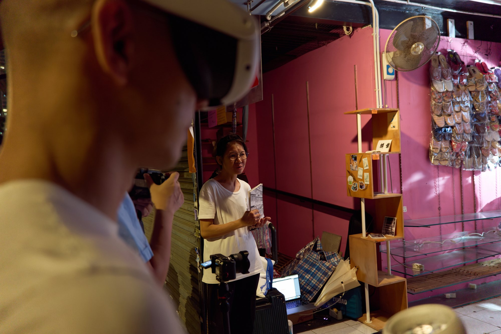
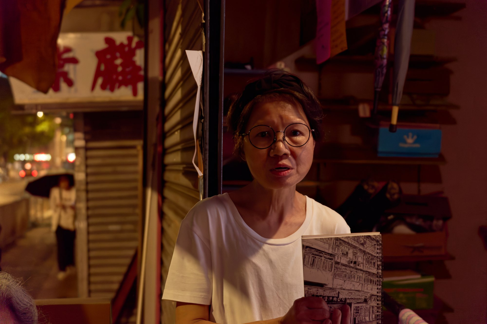
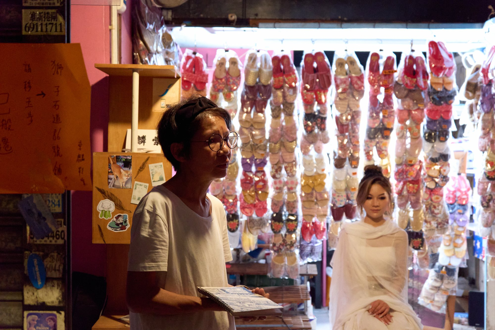
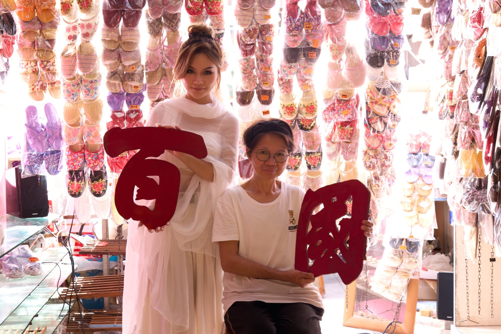
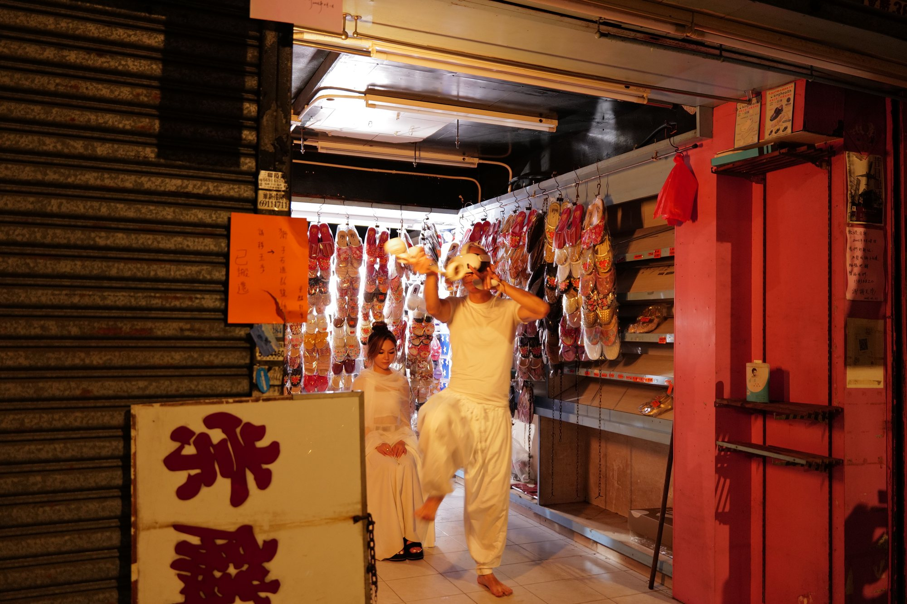

CSLT
by artrio
(Formerly 「X-ARt」)
About this Project
A farewell performance for Tsung Lun Shoe Shop, a 70-year-old family business facing the former Kowloon Walled City.
Come. Stay. Linger. Time. is an ephemeral piece commemorating the closing of Tsung Lun Shoe Shop. Located right across from the former Kowloon Walled City, it witnessed over 60 years of a changing Kowloon City, from the Walled City's dismantling and Kai Tak Airport's coming and going, to its own relocation under urban renewal. Three generations have woven themselves into the fabric of this iconic Hong Kong neighbourhood.
Video
Behind the Piece
C.S.L.T. took place inside Tsung Lun Shoe Shop on its final day at that address. Nearly 200 traditional Chinese embroidered slippers, one of the first products sold when it opened in 1967, formed a curtain behind a wooden chair from the founder's time. On this stage, the founder's granddaughter sat while her mother, the second-generation proprietor, read her own poem and shared stories of growing up and watching her daughter grow up there. As she recited the poem, her words were inscribed into the shop as an expressive piece of 3D grass-script Chinese calligraphy via augmented reality.
As the block gives way to urban redevelopment, we spent a month collecting audio and visual data, assembling point clouds and 3D Gaussian Splatting models of its diverse shops.
Image Gallery






Events
-
CSLT: Come Stay Linger Time Tsung Lun Shoe Shop, Kowloon City, HK
Artists
- Lai Hing Stella KWOK
- bLYHn
- Dominie CHAN
- Tristan BRAUD
- Christopher CS CHAN
Technology
Photography & Videography
- Benny NG
- Christopher CS CHAN
Special Thanks
- Tsung Lun Shoe Shop
- The residents and shopowners of Kowloon City